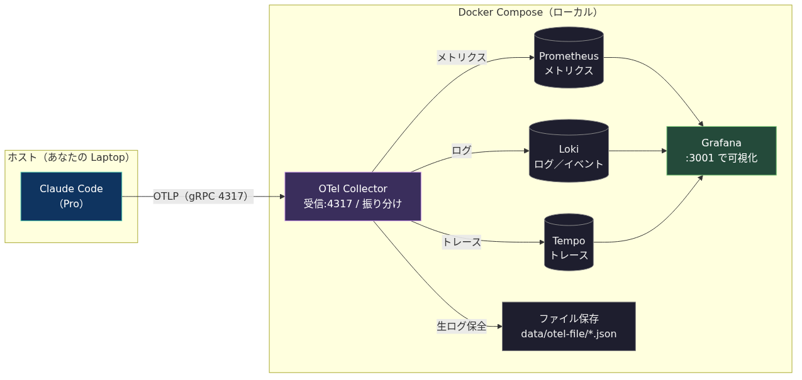
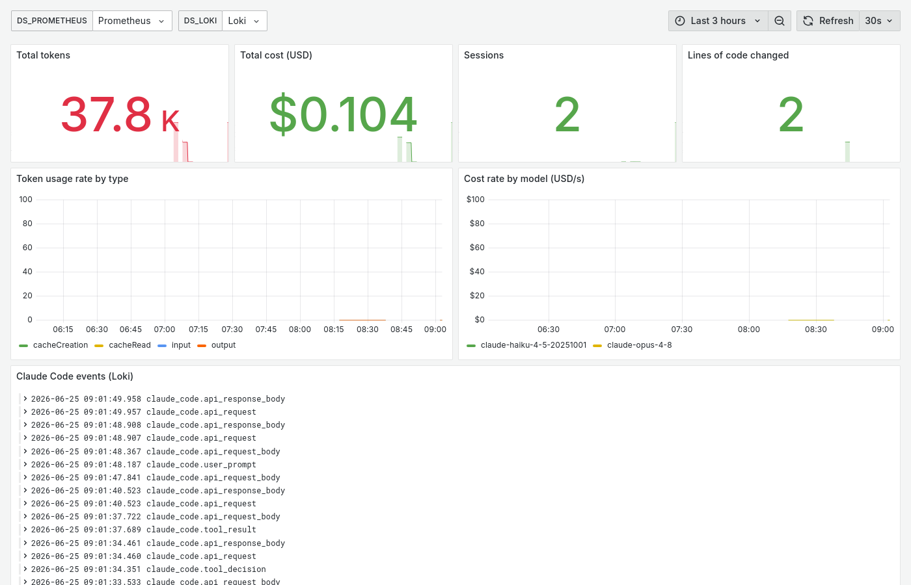
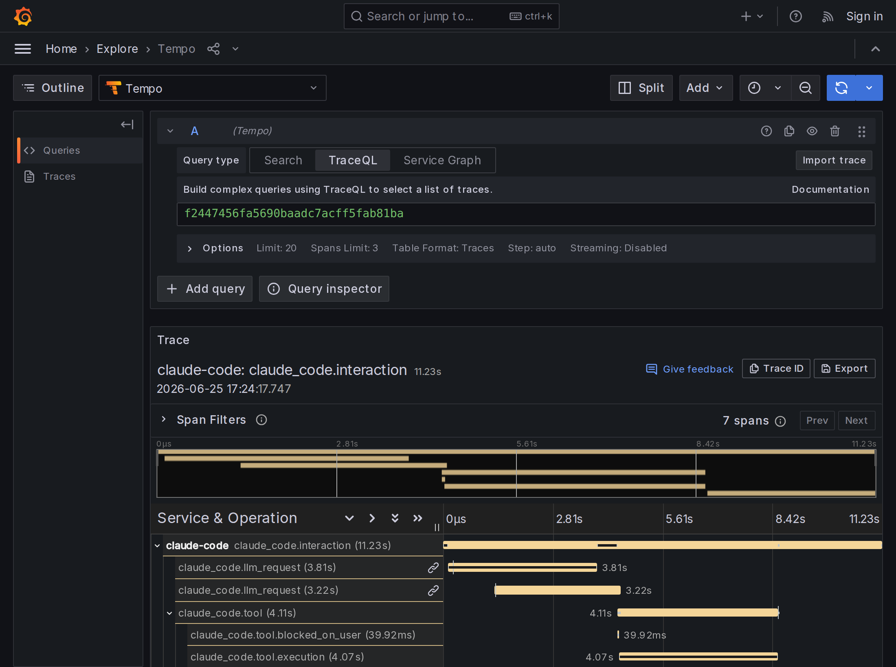

検証日: 2026-06-25 | 対象: Claude Code v2.1.179
| 信号 | 定義 | 監査での意味 | 本PoCの保存先 |
|---|---|---|---|
| メトリクス | 数値の時系列 | 「いつ・どれだけ」使ったか(量) | Prometheus |
| ログ/イベント | 個々の出来事の記録 | 「何が起きたか」(入力・ツール実行等) | Loki |
| トレース | 1リクエストの処理経路と所要時間 | 「どの順序で処理されたか・どこが遅いか」 | Tempo |

| 要素 | 役割 |
|---|---|
| OTel Collector | OTLP 受信・振り分け・ファイル保全 |
| Prometheus | メトリクス蓄積(スクレイプ) |
| Loki | ログ/イベント蓄積(OTLP push) |
| Tempo | トレース蓄積 |
| Grafana | 横断可視化・相関 |
| file exporter | 生 JSON をローカル保全 |
受信側はすべて Docker Compose。ホストは claude に環境変数を渡して起動するのみ。
対象ファイル: 本リポジトリの otel/config.yaml(Collector コンテナにマウント)。
Collector は 受信(receivers)→加工(processors)→送信(exporters) という流れ(pipeline)を信号ごとに定義する。
本PoC は「OTLP で受信し、各信号を複数の送信先へ同時に流す」だけで加工は行わない。
# otel/config.yaml
receivers: # 受け口: Claude Code からの OTLP を受信
otlp: { protocols: { grpc: { endpoint: 0.0.0.0:4317 } } }
exporters: # 送り先
prometheus: { endpoint: 0.0.0.0:8889 } # メトリクス
otlphttp/loki: { endpoint: http://loki:3100/otlp } # ログ/イベント
otlp/tempo: { endpoint: tempo:4317 } # トレース
file/logs: { path: /data/otel-file/logs.json } # ローカル保全
service:
pipelines: # 信号ごとに「受信→送信」の経路を定義
metrics: { receivers: [otlp], exporters: [prometheus, file/metrics] }
logs: { receivers: [otlp], exporters: [otlphttp/loki, file/logs] }
traces: { receivers: [otlp], exporters: [otlp/tempo, file/traces] }対象ファイル: Claude Code の管理者設定ファイル managed-settings.json
(Linux/WSL: /etc/claude-code/、macOS: /Library/Application Support/ClaudeCode/、
Windows: C:\ProgramData\ClaudeCode\)。env ブロックに記述すると全ユーザへ一括適用され、
MDM 等で配布でき、ユーザ側では上書きできない。
// /etc/claude-code/managed-settings.json
{
"env": {
"CLAUDE_CODE_ENABLE_TELEMETRY": "1",
"OTEL_METRICS_EXPORTER": "otlp",
"OTEL_LOGS_EXPORTER": "otlp",
"OTEL_EXPORTER_OTLP_PROTOCOL": "grpc",
"OTEL_EXPORTER_OTLP_ENDPOINT": "http://collector.example.com:4317"
}
}出典: 公式ドキュメント「管理者設定」
code.claude.com/docs/ja/monitoring-usage#administrator-configuration
既定では機微情報はマスクされる。以下の環境変数を有効化すると、取得内容が段階的に拡張される。
| 環境変数 | 有効化で取得される情報 | 既定 |
|---|---|---|
OTEL_LOG_USER_PROMPTS | ユーザ入力の本文(prompt) | OFF |
OTEL_LOG_TOOL_DETAILS | ツール入力引数(bash コマンド・対象パス・MCP名 等) | OFF |
OTEL_LOG_TOOL_CONTENT | ツール入出力の内容(トレース必須・60KB 切詰) | OFF |
OTEL_LOG_RAW_API_BODIES | Messages API の request/response 全文(=会話履歴・モデル出力本文) | OFF |
CLAUDE_CODE_ENHANCED_TELEMETRY_BETA + OTEL_TRACES_EXPORTER | 分散トレース(span)の出力(ベータ) | OFF |
注: OTEL_LOG_RAW_API_BODIES は会話履歴の全文を含むため最も機微である。
公式ドキュメントでも、これを有効化することは他の各環境変数が開示する情報すべてを含めることに同意する意味だと明記されている。
なお =file:<dir> を指定すると、60KB で切り詰めずに全文をファイルへ保存できる。
出典: 公式ドキュメント「設定の詳細 > 一般的な設定変数」および「トレース(ベータ)」
code.claude.com/docs/ja/monitoring-usage#common-configuration-variables ／ #traces-beta
user.email)・
トレース(処理の親子構造)が取得できたかを実データで点検する。補足: 各イベントには、同じプロンプトに由来する記録を束ねる識別子 prompt.id が付く。
これを用いて、1つの入力に対する一連の記録(入力 → API 呼び出し → ツール実行 → 出力)が
欠けなく時系列でつながることを確認した。
Claude Code 2.1.179 / otel-collector-contrib 0.115.1 / Prometheus 2.55.1 / Loki 3.3.2 / Tempo 2.6.1 / Grafana 11.4.0。ホスト: WSL2 (Linux)。
| メトリクス(Prometheus 名) | 意味 |
|---|---|
claude_code_token_usage_tokens_total | トークン数(type: input/output/cacheRead/cacheCreation) |
claude_code_cost_usage_USD_total | 推定コスト(model 別) |
claude_code_session_count_total | セッション数 |
claude_code_lines_of_code_count_total | 変更行数(added/removed) |
claude_code_code_edit_tool_decision_total | 編集ツールの許可/拒否 |
claude_code_active_time_seconds_total | 実利用時間 |
ラベルに model / session_id / user_email / organization_id / terminal_type / service_version 等を保持。
コストは API 単価換算の推定値であり、定額プラン(Pro/Max)では実課金されない(利用量の目安)。
出典: 公式ドキュメント「メトリクス」「メトリクスの詳細」「標準属性」
code.claude.com/docs/ja/monitoring-usage#metrics ／ #metric-details ／ #standard-attributes

Claude Code の「ログ」信号は、自由記述のテキストログ行ではなく、event.name を持つ
構造化イベントとして OTLP ログで出力される(=本資料の「ログ」はこのイベント群を指す)。
Loki では {service_name="claude-code"} | event_name="…" で絞り込める。主要イベントと監査上重要な属性(実測)を示す。
イベント (event.name) | 主な属性 | 監査観点 |
|---|---|---|
user_prompt | prompt_length / prompt(本文※) | ユーザ入力 |
api_request | model, input/output/cache tokens, cost_usd, duration_ms | トークン・コスト |
api_response_body ※ | body(応答 JSON = モデル出力本文) | Claude 出力 |
tool_result | tool_name, success, duration_ms, tool_input(引数※) | ツール実行 |
tool_decision | tool_name, decision(accept/reject), source | 権限判断 |
api_error / api_refusal | status_code, error, stop_reason | 失敗・拒否 |
| 他 | auth, mcp_server_connection, permission_mode_changed, plugin_loaded, skill_activated, at_mention … | |
全イベント共通: session.id / user.id / user.email / organization.id / terminal.type / event.timestamp / prompt.id。
(※ は §5 のフラグ有効時のみ。)
出典: 公式ドキュメント「イベント」(各イベント定義・属性)
code.claude.com/docs/ja/monitoring-usage#events ／ #user-prompt-event ／ #tool-result-event ／ #api-response-body-event
対応関係(要約): ①入力=user_prompt / ②③④ツール=tool_result(Write・Read・Bash)・tool_decision /
⑤応答=api_request・api_response_body・token/cost メトリクス / トレースは interaction → llm_request・tool→execution。
補足動画: 同一時系列の左右対比 demo/side-by-side.mp4、Grafana 各画面の詳細 demo/gui-demo.mp4 ＋ presentation/gui-guide.md。
分散トレースとは、1件の処理(ここでは「ユーザの1プロンプト処理」)が内部で行った個々の処理を、
span(=処理区間。名前・開始/終了時刻・親子関係をもつ最小単位)の集まりとして記録したもの。
span 同士の親子関係を span 階層と呼ぶ。
Claude Code のトレース出力は現在ベータ提供で、§5 の CLAUDE_CODE_ENHANCED_TELEMETRY_BETA と
OTEL_TRACES_EXPORTER を設定すると出力される。本検証ではこれを有効化して実行し、
生成された span が Tempo に送信・保存され、Grafana で参照できることを確認した。
claude_code.interaction (ユーザの1ターン全体)
├── claude_code.llm_request (API 呼び出し。複数回あり得る)
├── claude_code.tool (ツール実行)
│ ├── claude_code.tool.blocked_on_user (権限承認の待ち時間)
│ └── claude_code.tool.execution (ツール本体の実行時間)
└── claude_code.llm_request各 span は所要時間をもつため、1ターンの時間を「API 待ち / ツール実行 / 権限待ち」へ
分解でき、どこが遅いか(ボトルネック)を特定できる。llm_request span は
model / stop_reason / ttft_ms / tokens / request_id 等を保持する。
出典: 公式ドキュメント「トレース(ベータ)」および span 階層・span 属性の各節
code.claude.com/docs/ja/monitoring-usage#traces-beta ／ #span-hierarchy ／ #span-attributes

| 監査したい情報 | 取得 | 条件 |
|---|---|---|
| いつ・誰が(user/session/org)・量(token/cost) | 可 | 既定 |
| どのツールを・成否・所要時間・権限判断 | 可 | 既定 |
| ユーザ入力 本文 | 可 | OTEL_LOG_USER_PROMPTS |
| ツール入力引数 / 入出力内容 | 可 | OTEL_LOG_TOOL_DETAILS / …_CONTENT |
| モデル出力本文・会話履歴全文 | 可 | OTEL_LOG_RAW_API_BODIES |
| 分散トレース(処理の流れ・所要時間) | 可 | ENHANCED_TELEMETRY_BETA |
| 拡張思考 (extended thinking) 本文 | 不可 | 常にマスク(構造的制約) |
拡張思考(extended thinking)とは、モデルが回答を出す前に行う内部推論(思考)のテキストを指す。
会話本文を取得できる唯一の経路は raw body 出力(OTEL_LOG_RAW_API_BODIES)だが、公式ドキュメントでは
api_response_body は「拡張思考コンテンツはマスクされます」、api_request_body も
「前のアシスタントターンの拡張思考コンテンツはマスクされます」と明記している。
すなわち入力側・出力側の双方で拡張思考だけは除外され、テレメトリ経由では取得できない。
結論: テレメトリ単独でほぼ全ての監査情報を取得・相関できる。取得できないのは拡張思考本文のみで、
これも含めた会話の完全保全が必要な場合はローカルのセッションログ ~/.claude/projects/**/*.jsonl を併用できる。
出典: 公式ドキュメント「API リクエストボディイベント」「API レスポンスボディイベント」
code.claude.com/docs/ja/monitoring-usage#api-request-body-event ／ #api-response-body-event
Claude Code 2.1.179 / otel-collector-contrib 0.115.1 / Prometheus 2.55.1 / Loki 3.3.2 / Tempo 2.6.1 / Grafana 11.4.0.
ライトニング版スライド: presentation/index-lightning.html / GUI 各画面の詳細解説: presentation/gui-guide.md.